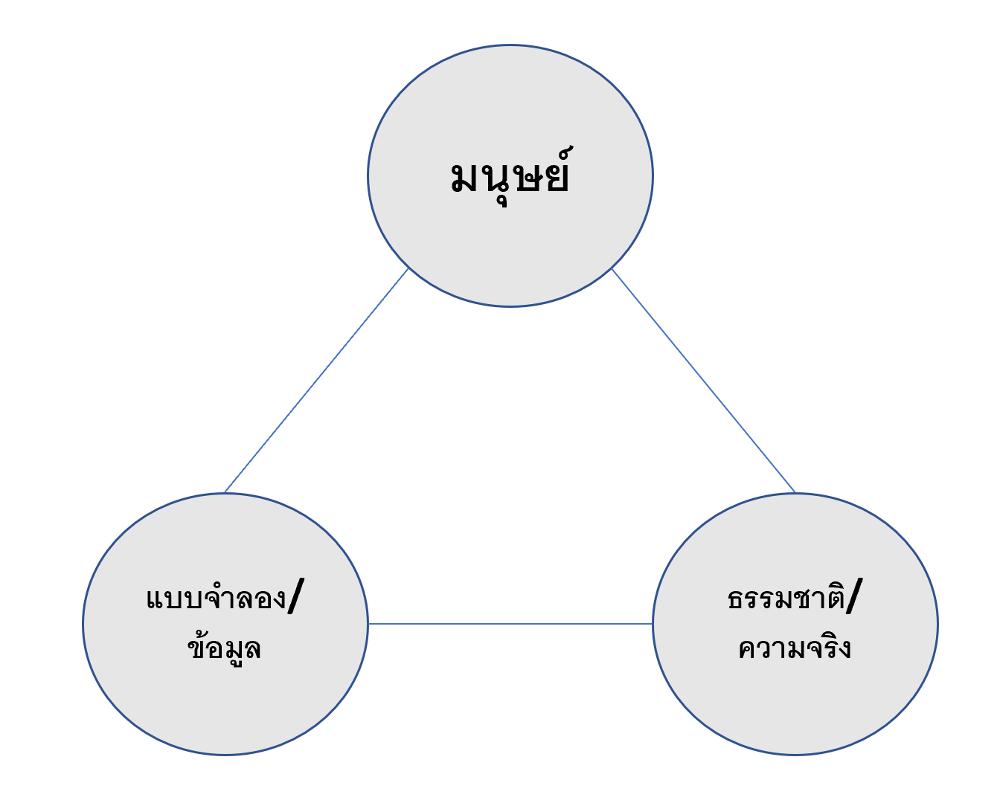
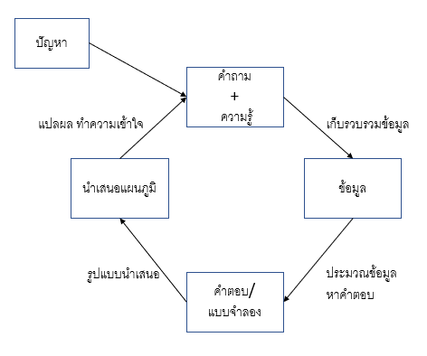
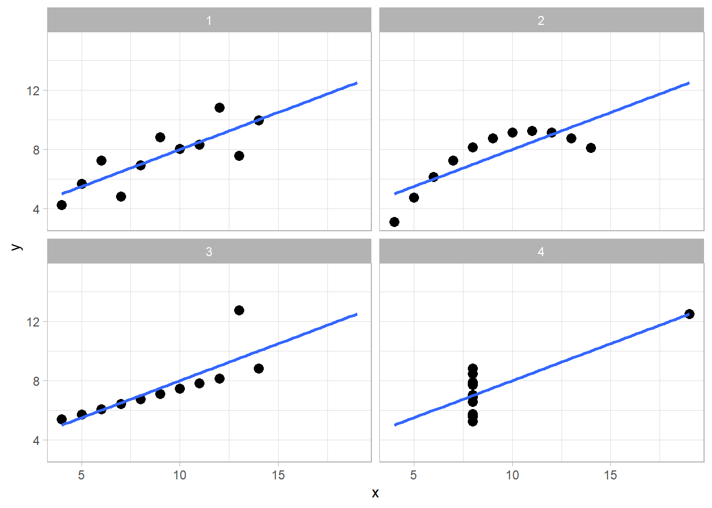
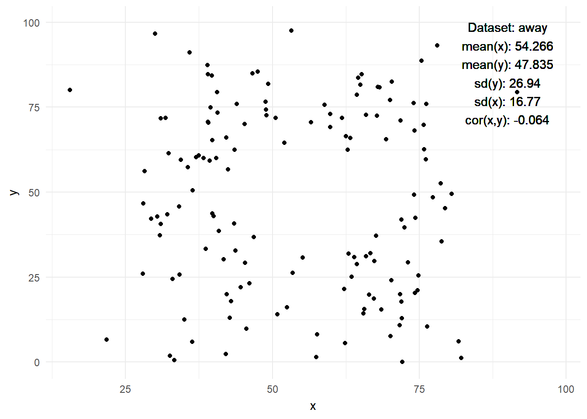
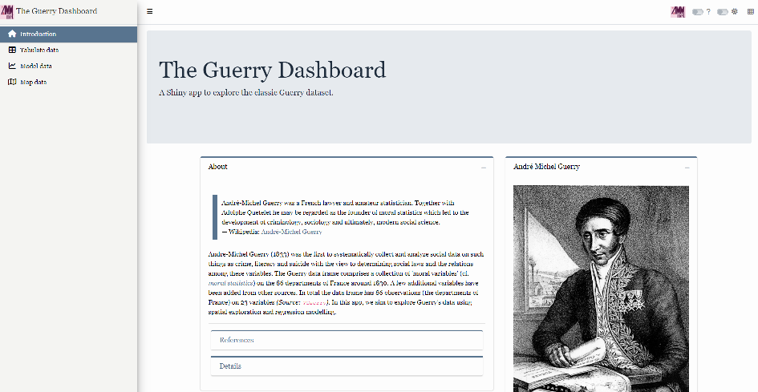

| y1 (Set 1) | y2 (Set 2) | y3 (Set 3) | y4 (Set 4) | |
|---|---|---|---|---|
| (Intercept) | 3.000 | 3.001 | 3.002 | 3.002 |
| (1.125) | (1.125) | (1.124) | (1.124) | |
| x1 | 0.500 | |||
| (0.118) | ||||
| x2 | 0.500 | |||
| (0.118) | ||||
| x3 | 0.500 | |||
| (0.118) | ||||
| x4 | 0.500 | |||
| (0.118) | ||||
| Notes: ... | ||||
เริ่มต้น
วิเคราะห์ข้อมูลแบบมีปฏิสัมพันธ์ (Interactive data analysis)
ทำไม
- จุดประสงค์ของการทำ data visualisation คืออะไร
- แรงบันดาลใจ กระตุ้นความสนใจ
- อธิบายข้อมูล
- วิเคราะห์
- การวิเคราะห์ข้อมูลช่วยให้เราเข้าใจปัญหา สถานะการณ์ที่มันซับซ้อนได้ดียิ่งขึ้น
- ยิ่งเราเข้าใจปัญหาดีขึ้น ก็ยิ่งเพิ่มโอกาสที่เราจะหาทางออกหรือแก้ปัญหาได้มากขึ้น 
วิเคราะห์ข้อมูลแบบมีปฏิสัมพันธ์มีกระบวนการอย่างไร

ขั้นตอนการวิเคราะห์ข้อมูลแบบมีปฏิสัมพันธ์
- นิยามปัญหา: ปัญหาหรือเป้าหมายที่เราต้องการจะแก้ด้วยการวิเคราะห์ข้อมูลแบบมีปฏิสัมพันธ์คืออะไร
- ตั้งคำถาม: ตั้งชุดคำถามจากปัญหาที่สนใจ
- รวบรวม เปลี่ยนแปลง ทำความคุ้นเคยกับข้อมูล: เตรียมข้อมูลให้พร้อมสำหรับการวิเคราะห์ที่ต้องการ
- สร้างแบบจำลอง: พยายามใช้สถิติหรือเทคนิคทางmachine learning สร้างแบบจำลอง สรุป หรือวิเคราะห์ข้อมูล
- นำเสนอข้อมูลหรือแบบจำลอง: สรุปผลที่ได้และนำเสนอในรูปแแบที่เข้าใจได้ง่าย
- แปลผล: ทำความเข้าใจกับผลที่ได้ ขั้นตอนนี้สำคัญ
- สรุปผลและตั้งคำถามกับผลที่ได้: ตั้งคำถามและถามกลับจากผลที่ได้เพื่อให้ได้ข้อสรุปหรือเข้าใจปัญหามากขึ้น
สิ่งสำคัญในการวิเคราะห์ข้อมูลและปฏิสัมพันธ์
- กระบวนการนี้ไม่เป็นลำดับ แต่เป็นกระบวนการที่วนกลับมาซ้ำอยู่เสมอ (กระโดดไปมาระหว่างขั้นตอน)
- บางกิจกรรมเป็นเอกลักษณ์ของมนุษย์เท่านั้น เช่น กำหนดปัญหา สร้างคำถาม เป็นต้น
- การแสดงผลเป็นส่วนเล็กน้อยของกระบวนการและประสิทธิภาพขึ้นอยู่กับขั้นตอนอื่น ๆ
- ปฏิสัมพันธ์: ทุกครั้งที่คุณบอกให้คอมพิวเตอร์ทำอะไร (และส่งข้อมูลกลับมา)
- รวบรวมและแปลงข้อมูล
- ระบุโมเดลและ/หรือคำค้นจากข้อมูล
- ระบุวิธีการแสดงผล (และโมเดล)
- เรียกดูผลลัพธ์
- สังเคราะห์และสื่อสารข้อมูลที่รวบรวมได้
- ปฏิสัมพันธ์โดยตรงกับการจัดการเชิงตรงกับการป้อนคำสั่ง: อินเตอร์เฟซ WIMP (การจัดการโดยตรงผ่านการคลิก หน้าต่างของโปรแกรม ไอคอน เมนู ฯลฯ) เป็นการปฏิสัมพันธ์ แต่เช่นเดียวกับการป้อนคำสั่งผ่านบรรทัดคำสั่ง
- คุณสามารถให้ผู้ใช้พิมพ์ได้!
- กลุ่มเป้าหมาย: ทักษะและความรู้พื้นฐานของพวกเขาคืออะไร? (ความรู้ด้านโดเมน สถิติ กราฟ)
ความท้าทายของการวิเคราะห์ข้อมูลแบบสัมพันธ์แบบมุ่งเน้นการแสดงผล
- การกำหนดรายละเอียด (ความคิด → ข้อมูล/โมเดล): จำเป็นต้องแปลงคำถามและความคิดของเราให้สามารถอ่านได้เป็นข้อมูลที่คอมพิวเตอร์สามารถอ่านได้
- Shiny ช่วยให้ผู้ที่ไม่ใช่โปรแกรมเมอร์สามารถทำการวิเคราะห์ข้อมูลได้ แต่ต้องมีความรู้ด้าน R เพื่อสร้างแอป
- แต่ยังมีเครื่องมือที่ง่ายกว่านี้อีกเช่นกัน
- การแสดงผล (ข้อมูล/โมเดล → สายตา)
- ขั้นตอนถัดไปคือการค้นหาการแสดงผล (แสดงผลแบบสายตา) เพื่อให้ผู้ใช้สามารถตรวจสอบและเข้าใจได้
- “การตัดสินใจว่าจะแสดงผลอะไรเป็นเรื่องที่สำคัญเช่นเดียวกับการตัดสินใจว่าจะแสดงผลอย่างไร”
- “ความสวยงามของการแสดงผลจำเป็นต้องมีในระดับใดเพื่อที่จะเป็นประโยชน์สำหรับการวิเคราะห์ข้อมูล?”
- “ปัญหาการแสดงผลส่วนใหญ่สามารถแก้ไขได้ด้วยกราฟเพียงไม่กี่รูป”
- มีความยากที่จะใช้งาน ปรับแต่ง และผสมผสานกราฟอย่างชาญฉลาด/มีประสิทธิภาพ/นวัตกรรม
- การตีความ (สายตา → ความคิด)
- “สิ่งที่คนต้องรู้ในการคิดอย่างมีประสิทธิภาพเกี่ยวกับผลลัพธ์ของการสร้างโมเดลและการแสดงผล”
- “คนสามารถตีความและเชื่อใจในแอป shiny ของคุณได้หรือไม่?”
ทำไมต้องแสดงผล
กราฟทั้งสี่ของอันสคอมบี
อันสคอมบ์(F. J. Anscombe) ได้เขียนบทหนึ่งความลงในวารนักสถิติอเมริกัน(https://www.jstor.org/stable/2682899) ที่แสดงให้เห็นความสัมคัญของการวาดกราฟหรือการแสดงผลข้อมูลในการวิเคราะห์เชิงสถิติ
- Table 1 ผลลัพธ์จากการทำ linear regression กับข้อมูลของอันสคอมบ์
- คำถาม: เราพบอะไร
### กราฟทั้งสี่ของอันสคอมบ์ (2)
- Table 2 ข้อมูลทั้ง 4 ของอันสคอมบ์ [@Anscombe1973-xv]
- Q: ข้อมูลแสดงอะไร อ่านเข้าใจง่ายหรือไม่
Table 2: ?(caption)
| x1 | y1 | x2 | y2 | x3 | y3 | x4 | y4 |
|---|---|---|---|---|---|---|---|
| 10 | 8.04 | 10 | 9.14 | 10 | 7.46 | 8 | 6.58 |
| 8 | 6.95 | 8 | 8.14 | 8 | 6.77 | 8 | 5.76 |
| 13 | 7.58 | 13 | 8.74 | 13 | 12.74 | 8 | 7.71 |
| 9 | 8.81 | 9 | 8.77 | 9 | 7.11 | 8 | 8.84 |
| 11 | 8.33 | 11 | 9.26 | 11 | 7.81 | 8 | 8.47 |
| 14 | 9.96 | 14 | 8.10 | 14 | 8.84 | 8 | 7.04 |
| 6 | 7.24 | 6 | 6.13 | 6 | 6.08 | 8 | 5.25 |
| 4 | 4.26 | 4 | 3.10 | 4 | 5.39 | 19 | 12.50 |
| 12 | 10.84 | 12 | 9.13 | 12 | 8.15 | 8 | 5.56 |
| 7 | 4.82 | 7 | 7.26 | 7 | 6.42 | 8 | 7.91 |
| 5 | 5.68 | 5 | 4.74 | 5 | 5.73 | 8 | 6.89 |
กราฟทั้ง 4 ของอันสคอมบ์ (3)
- Figure 1 นำเสนอข้อมูลในรูปแบบกราฟ
- Q: เราเห็นอะไรจากการนำเสนอนี้
`geom_smooth()` using formula = 'y ~ x'
The Datasaurus Dozen
- Figure 2 ภาพเคลื่อนไหวของ the datasaurus dozen โดย Tom Westlake (see here, ต้นแบบมาจาก Alberto Cairo)
- Q: เราเห็นอะไรจากการนำเสนอนี้

การนำเสนอข้อมูลแบบมีปฏิสัมพันธ์
- “การนำเสนอข้อมูลแบบมีปฏิสัมพันธ์(interactive data visualization) ทำให้เราสามารถปรับเปลี่ยนรูปแบบหรือองค์ประกอบของกราฟหรือเชื่อมโยงกับการนำอื่นๆได้โดยตรง” [@Swayne1999-wf] (Wikipedia)
- การมีปฏิสัมพันธ์กับข้อมูลนี้ทำให้เราเข้าใจข้อมูลได้มากขึ้น [cf. @Cleveland1984-fy]
- ระบบการนำเสนอข้อมูลเราพัฒนากันมาไกล อยากให้ลองดูโปรแกรมยุคแรกอย่าง PRIM-9 (1974) ดูครับ [@Friendly2006-aq, 23, see also Cleveland and McGill, 1988, Young et al. 2006]
- เราพัฒนากันมาไกล… John Tukey on prim9
- การมีปฏิสัมพันธ์กับข้อมูลทำให้เรา…
- …เข้าใจข้อมูลได้มากขึ้น (ในหลายมิติ)
- …หาความสัมพันธ์ของข้อมูลได้ง่าย
- …เข้าถึงข้อมูลได้ง่ายขึ้น โดยไม่จำเป็นต้องมีพื้นฐาน
- …สร้าง’เอกสาร’ที่มีปฏิสัมพันธ์กับคนอ่านได้
Shiny
Shiny คืออะไร?
Shiny คือ web application framework อันหนึ่งสำหรับภาษา R ที่เราสามารถเปลี่ยนรูปแบบการวิเคราะห์ไปอยู่ในรูปแบบ interactive web applications อืมมมม มันหมายความว่ายังไง?
- ตัวหน้าตาของมันก็คือ webpage
- ใน webpage นี้เราสามารถมีปฏิสัมพันธ์กับกับส่วนต่างๆที่ปรากฏหน้านั้นได้ (เราเรียกหน้าwebpageนี้ user interface)
- โดยข้างหลังของ webpage นี้ก็คือคอมพิวเตอร์ของเรานี่เอง (หรือที่บางทีเรียกว่า server)
- ตัวserver นี้จะทำการรัน code R ที่เราเขียนสำหรับ webapp นี้
- เมื่อเราเปลี่ยนค่าinputsอะไรบางอย่างบน webapp ข้อมูลการปรับเปลี่ยนนี้จะถูกส่งไปที่คอมพิวเตอร์หรือserver
- คอมพิวเตอร์ก็จะทำการรัน code R ของเราใหม่โดยใช้ค่าที่เรา inputs ใหม่ (input functions)
- หลังจากนั้นคอมพิวเตอร์ก็จะส่ง outputs ใหม่กลับมาที่หน้า webpage (output functions)
- ประวัติของ Shiny: Joe Cheng: The Past and Future of Shiny1
- Popularity: Shiny
- Comparison: Ggplot2
, dplyr
- Comparison: Ggplot2
ข้อดีและข้อเสียของ Shiny
ข้อดี R Shiny:
- สร้างตัวต้นแบบได้เร็ว: Shiny เป็นรูปแบบคำสั่งที่ใช้ง่ายและทำให้สามารถเปลี่ยนจากต้นแบบเป็นweb application ได้รวดเร็ว
- การมีปฏิสัมพันธ์: Shiny ช่วยให้เราสร้าง interactive web apps ได้สะดวก
- เป็นส่วนหนึ่งของ R Ecosystem: Shiny ถูกรวมเป็นส่วนหนึ่งของ R’s vast open-source ecosystem (มี package R สำหรับงานด้านต่าง ๆ เยอะมาก สำหรับภาษา python ก็มี shiny for python)
- แบบจำลองทางสถิติ และการนำเสนอ: เราสามารถที่จะประยุกต์ใช้แบบจำลองสถิติและนำเสนอผลลัพธ์ได้ใน webapp ได้ผ่าน Shiny
- ไม่จำเป็นต้องมีทักษะด้านการพัฒนาweb application: With Shiny, you can create web apps using R code alone. Knowledge of HTML, CSS, or JavaScript is not necessary but can help
- Reactivity: Shiny มีระบบโต้ตอบที่ยอดเยี่ยม
- การเผยแพร่และตีพิมพ์: เราสามารถที่จะเผยแพร่ apps ที่สร้างด้วย Shiny ได้สะดวก ไม่ว่าจะเป็นผ่านหลายช่องทางไม่ว่าจะเป็น RStudio’s Shiny server, Shinyapps.io, หรือใส่ไว้ในเอกสาร R Markdown documents หรือ websites
ข้อเสีบของ Shiny:
- ประสิทธิภาพ: Shiny apps รันโดยอาศัยภาษา R ซึ่งเป็นภาษาแบบ interpreted language ฉะนั้นจะมีปัญหาเรื่องความรวดเร็วให้การประมวณผลข้อมูลหรือคำสั่งที่มีปริมาณมาก
- Single-threaded: ภาษา R (และส่วนขยายอย่าง Shiny) เป็นการประมวณผลแบบ single-threaded จะมีปัญหากับการประมวณผลที่ต้องรับ inputs มากจากหลายผู้ใช้ในเวลาเดียวกัน (ดูเพิ่มเติมที่ here).
- ความซับซ้อน: ถึงแม้ Shiny จะง่ายที่จะเรียนรู้แต่ก็เป็นอะไรที่ท้าทายในส่วนของการออกแบบในส่วนของการโต้ตอบ
- ข้อจำกัดการดัดแปลง: มันง่ายที่จะสร้าง apps ด้วย Shiny แต่การปรับปรุงเปลี่ยนแปลงในส่วนของ user interface ก็ยังเป็นส่วนที่ท้าทายเพราะต้องอาศัยภาษาอื่น ๆ อย่าง JavaScript,CSS หรือแม้ package อื่น ๆ ช่วย
- การบันทึกและเก็บรวบรวมข้อมูล: การบันทึกและเก็บรวบรวมข้อมูลในรูปแบบฐานข้อมูลยังดูยุ่งยากสำหรับ Shiny
- ค่าบำรุงรักษา: ค่าบำรุงรักษา Shiny apps ในระยะยาวยังดูสูงเพราะต้องอาศัยผู้เชี่ยวชาญเฉพาะด้าน
- Software Dependencies: Certain Shiny applications may have many software dependencies, which can be challenging to manage and could potentially lead to issues down the line.
The Guerry Dashboard: The app we will build
- ใน workshop นี้เราจะมาสร้าง Shiny app Figure 3 ด้วยกัน ลองดุ app นี้ (5-10 นาที) และตอบคำถาม:
- คำถามอะไรที่เราสามารถตอบได้โดยอาศัย app นี้
- app นี้ช่วยให้เราเข้าใจและวิเคราะห์ข้อมูลในappได้อย่างไร
- ใน app นี้มีองค์ประกอบสำหรับการมีปฏิสัมพันธ์อะไรบ้าง

Data
- ในappนี้เราจะวิเคราะห์ “Guerry data”
?Guerry: ข้อมูลจาก A.-M. Guerry, “Essay on the Moral Statistics of France”Guerry::gfrance85ประกอบด้วยแผนที่ฝรั่งเศสในปี ค.ศ. 1830 + Guerry data, ไม่รวม Corsica (Table 3 แสดงส่วนย่อย)
Data preparation code of the app
library(shiny)
library(htmltools)
library(bs4Dash)
Attaching package: 'bs4Dash'The following objects are masked from 'package:shiny':
actionButton, column, insertTab, navbarMenu, tabsetPanelThe following object is masked from 'package:graphics':
boxData preparation code of the app
library(fresh)
library(waiter)
library(shinyWidgets)
Attaching package: 'shinyWidgets'The following object is masked from 'package:bs4Dash':
progressBarData preparation code of the app
library(Guerry)
library(sf)Linking to GEOS 3.11.2, GDAL 3.6.2, PROJ 9.2.0; sf_use_s2() is TRUEData preparation code of the app
library(tidyr)
library(dplyr)
library(RColorBrewer)
library(viridis)Loading required package: viridisLiteData preparation code of the app
library(leaflet)
library(plotly)
Attaching package: 'plotly'The following object is masked from 'package:ggplot2':
last_plotThe following object is masked from 'package:stats':
filterThe following object is masked from 'package:graphics':
layoutData preparation code of the app
library(jsonlite)
Attaching package: 'jsonlite'The following object is masked from 'package:shiny':
validateThe following object is masked from 'package:purrr':
flattenData preparation code of the app
library(ggplot2)
library(GGally)Registered S3 method overwritten by 'GGally':
method from
+.gg ggplot2Data preparation code of the app
library(datawizard)
library(parameters)
Attaching package: 'parameters'The following object is masked from 'package:modelsummary':
supported_modelsData preparation code of the app
library(performance)
library(ggdark)
library(modelsummary)
# 1 Data preparation ----
## Load & clean data ----
variable_names <- list(
Crime_pers = "Crime against persons",
Crime_prop = "Crime against property",
Literacy = "Literacy",
Donations = "Donations to the poor",
Infants = "Illegitimate births",
Suicides = "Suicides",
Wealth = "Tax / capita",
Commerce = "Commerce & Industry",
Clergy = "Clergy",
Crime_parents = "Crime against parents",
Infanticide = "Infanticides",
Donation_clergy = "Donations to the clergy",
Lottery = "Wager on Royal Lottery",
Desertion = "Military desertion",
Instruction = "Instruction",
Prostitutes = "Prostitutes",
Distance = "Distance to paris",
Area = "Area",
Pop1831 = "Population"
)
# Import the 'gfrance85' data from the 'Guerry' package
data_guerry <- Guerry::gfrance85 %>%
st_as_sf() %>% # Convert to a Simple Features (sf) object
as_tibble() %>% # Convert to a 'tibble'
st_as_sf(crs = 27572) %>% # set the Coordinate Reference to 27572 System (CRS)
mutate(Region = case_match( # Create new region column
Region,
"C" ~ "Central",
"E" ~ "East",
"N" ~ "North",
"S" ~ "South",
"W" ~ "West"
)) %>%
select(-c("COUNT", "dept", "AVE_ID_GEO", "CODE_DEPT")) %>% # drop columns
select(Region:Department, where(is.numeric)) # select columnsLoading required package: spThe legacy packages maptools, rgdal, and rgeos, underpinning the sp package,
which was just loaded, will retire in October 2023.
Please refer to R-spatial evolution reports for details, especially
https://r-spatial.org/r/2023/05/15/evolution4.html.
It may be desirable to make the sf package available;
package maintainers should consider adding sf to Suggests:.
The sp package is now running under evolution status 2
(status 2 uses the sf package in place of rgdal)Data preparation code of the app
kable(head(data_guerry[c(1,2,3,4,21,22)]))| Region | Department | Crime_pers | Crime_prop | Pop1831 | geometry |
|---|---|---|---|---|---|
| East | Ain | 28870 | 15890 | 346.03 | MULTIPOLYGON (((801150 2092... |
| North | Aisne | 26226 | 5521 | 513.00 | MULTIPOLYGON (((729326 2521... |
| Central | Allier | 26747 | 7925 | 298.26 | MULTIPOLYGON (((710830 2137... |
| East | Basses-Alpes | 12935 | 7289 | 155.90 | MULTIPOLYGON (((882701 1920... |
| East | Hautes-Alpes | 17488 | 8174 | 129.10 | MULTIPOLYGON (((886504 1922... |
| South | Ardeche | 9474 | 10263 | 340.73 | MULTIPOLYGON (((747008 1925... |
- ข้อมูลจะแบ่งเป็น
85departments (N = 85)- ซึ่งตอนหลังเรารวมเป็นพื้นที่
geometry: ตัวแปรที่อธิบายรูปร่างของพื้นที่regions(บางที่เราก็ออกตัวแปรนี้ออก)- Advantages: ข้อมูลนี้น่าสนใจ เพราะมันมีแผนที่และข้อมูลซึ่งพร้อมใช้งานใน R
ส่วนประกอบของ Shiny app
- จากภาพ Figure 4, Shiny app ประกอบด้วย 2 ส่วน, คือ user interface (UI) กับ server, ที่ส่งผ่านเป็นตัวแปรหนึ่งใน
shinyApp()ซึ่งเป็นตัวสร้าง Shiny app จากคู่ ui/server

Shiny app อันแรก
- ด้านล่างนี้เราจะสร้าง app อันแรกกัน และจะอาศัยโอกาสนี้อธิบายส่วนประกอบพื้นฐานของ Shiny app (ตัวอย่าง here).
- ติดตั้ง packages ที่เกี่ยวข้อง:
install.packages("shiny")
install.packages("tidyverse")
# Guerry package is already installed- สร้าง folder ชื่อ “myfirstapp” ใน working directory.
- สร้าง script file ใน Rstudio และ save ใน working directory ด้วยชื่อ
app.R. - Copy code ด้านล่างนี้และวางใน
app.R
Code of the tabulate tab subset of the app
library(shiny)
library(htmltools)
library(bs4Dash)
library(fresh)
library(waiter)
library(shinyWidgets)
library(Guerry)
library(sf)
library(tidyr)
library(dplyr)
library(RColorBrewer)
library(viridis)
library(leaflet)
library(plotly)
library(jsonlite)
library(ggplot2)
library(GGally)
library(datawizard)
library(parameters)
library(performance)
library(ggdark)
library(modelsummary)
# 1 Data preparation ----
## Load & clean data ----
variable_names <- list(
Crime_pers = "Crime against persons",
Crime_prop = "Crime against property",
Literacy = "Literacy",
Donations = "Donations to the poor",
Infants = "Illegitimate births",
Suicides = "Suicides",
Wealth = "Tax / capita",
Commerce = "Commerce & Industry",
Clergy = "Clergy",
Crime_parents = "Crime against parents",
Infanticide = "Infanticides",
Donation_clergy = "Donations to the clergy",
Lottery = "Wager on Royal Lottery",
Desertion = "Military desertion",
Instruction = "Instruction",
Prostitutes = "Prostitutes",
Distance = "Distance to paris",
Area = "Area",
Pop1831 = "Population"
)
data_guerry <- Guerry::gfrance85 %>%
st_as_sf() %>%
as_tibble() %>%
st_as_sf(crs = 27572) %>%
mutate(Region = case_match(
Region,
"C" ~ "Central",
"E" ~ "East",
"N" ~ "North",
"S" ~ "South",
"W" ~ "West"
)) %>%
select(-c("COUNT", "dept", "AVE_ID_GEO", "CODE_DEPT")) %>%
select(Region:Department, all_of(names(variable_names)))
## Prep data (Tab: Tabulate data) ----
data_guerry_tabulate <- data_guerry %>%
st_drop_geometry() %>%
mutate(across(.cols = all_of(names(variable_names)), round, 2))
# 3 UI ----
ui <- dashboardPage(
title = "The Guerry Dashboard",
## 3.1 Header ----
header = dashboardHeader(
title = tagList(
span("The Guerry Dashboard", class = "brand-text")
)
),
## 3.2 Sidebar ----
sidebar = dashboardSidebar(
id = "sidebar",
sidebarMenu(
id = "sidebarMenu",
menuItem(tabName = "tab_tabulate", text = "Tabulate data", icon = icon("table")),
flat = TRUE
),
minified = TRUE,
collapsed = TRUE,
fixed = FALSE,
skin = "light"
),
## 3.3 Body ----
body = dashboardBody(
tabItems(
### 3.3.2 Tab: Tabulate data ----
tabItem(
tabName = "tab_tabulate",
fluidRow(
#### Inputs(s) ----
pickerInput(
"tab_tabulate_select",
label = "Filter variables",
choices = setNames(names(variable_names), variable_names),
options = pickerOptions(
actionsBox = TRUE,
windowPadding = c(30, 0, 0, 0),
liveSearch = TRUE,
selectedTextFormat = "count",
countSelectedText = "{0} variables selected",
noneSelectedText = "No filters applied"
),
inline = TRUE,
multiple = TRUE
)
),
hr(),
#### Output(s) (Data table) ----
DT::dataTableOutput("tab_tabulate_table")
)
) # end tabItems
)
)
# 4 Server ----
server <- function(input, output, session) {
## 4.1 Tabulate data ----
### Variable selection ----
tab <- reactive({
var <- input$tab_tabulate_select
data_table <- data_guerry_tabulate
if (!is.null(var)) {
data_table <- data_table[, c("Region", "Department",var)]
}
data_table
})
### Create table----
dt <- reactive({
tab <- tab()
ridx <- ifelse("Department" %in% names(tab), 3, 1)
DT::datatable(
tab,
class = "hover",
extensions = c("Buttons"),
selection = "none",
filter = list(position = "top", clear = FALSE),
style = "bootstrap4",
rownames = FALSE,
options = list(
dom = "Brtip",
deferRender = TRUE,
scroller = TRUE,
buttons = list(
list(extend = "copy", text = "Copy to clipboard"),
list(extend = "pdf", text = "Save as PDF"),
list(extend = "csv", text = "Save as CSV"),
list(extend = "excel", text = "Save as JSON", action = DT::JS("
function (e, dt, button, config) {
var data = dt.buttons.exportData();
$.fn.dataTable.fileSave(
new Blob([JSON.stringify(data)]),
'Shiny dashboard.json'
);
}
"))
)
)
)
})
### Render table----
output$tab_tabulate_table <- DT::renderDataTable(dt(), server = FALSE)
}
shinyApp(ui, server)- เราสามารถที่จะรันหรือหยุด app โดยการคลิ็กปุ่ม Run App (Figure 5)

Minimum viable product (MVP)
- …คอนเซ็ปการสร้าง app แบบ MVP (Figure 6)!

- “version […] เพียงพอที่จะใช้งาน โดยลูกค้า” แล้วเก็บรวบรวมคำติชม (Wikipedia)
- “ทำให้มันทำงานได้ในระดับเล็กก่อน ซึ่งมันทำให้ง่ายในการปรับปรุงเปลี่ยนแปลงต่อไป” (Fay et al. 2021)
- ทำหน้าตาก่อน (UI)“: ทางปลอดภัยที่สุด (Fay et al. 2021)
- เห็นพร้องกันในส่วนประกอบ: ช่วยให่ทุกคนที่เกี่ยวข้องเห็นด้วยกับคุณสมบัติต่างๆของ app ที่ควรมีหลังจากที่ UI เริ่มทำขึ้นมาแล้ว
- ทำงานให้เป็นระเบียบ: “มันง่ายที่เราจะทำในส่วนเล็กๆและรู้ว่ามันทำงานยังไงก่อนที่จะรวมเข้ากับระบบใหญ่”
- และ…
- ..เราก็ทำตามแนวทางนี้ คือค่อยสร้างความซับสน ซับซ้อนอย่างเป็นระบบ
ขั้นตอนการทำงาน: พัฒนา, แก้ปัญหา และหาความช่วยเหลือ
- ดูขั้นตอนใน @wickham2021mastering [Ch. 5, 20.2.1]
- สามขั้นตอนสำหรับ Shiny :
- พัฒนาพื้นฐาน วงรอบของการสร้างapp เปลี่ยนแปลง และทดสอบผลลัพธ์
- แก้ปัญหา, หาว่า code หรือวิธีการของเราผิดตรงไหน อย่างไร
- เขียนอธิบาย, พยายามเขียนอธิบายว่าเราคิดหรือทำอะไรใน code เพื่อที่คนอื่นจะได้มาช่วยเหลือแก้ไข codeได้
ขั้นตอนในการพัฒนา
- การสร้างapp: เริ่มเขียน app โดยอาศัย code R ด้านล่างนี้ (
Shift + TabหรือเลือกNew Project -> Shiny Web Application) - ดูที่เราเปลี่ยน:
- เขียน code2
- รันapp
Cmd/Ctrl + Shift + Enter. - ทดลอง app ด้วยการเปลี่ยนค่าต่างๆ
- ปิดapp
- เริ่มข้อ 1 ใหม่
library(shiny)
ui <- fluidPage(
)
server <- function(input, output, session) {
}
shinyApp(ui, server)
Listening on http://127.0.0.1:4827tips
- ควบคุมการแสดงผล: โดยเริ่มต้นทุกครั้งที่รันapp ในRstudio มันจะ pop-out เป็นอีกหน้าต่างใหม่ แต่เราก็สามารถที่จะให้มันแสดง
Run in Viewer PaneกับRun Externalได้ - outline เอกสารหรือcode:
Cntrl + Shift + O - ลองดูว่าcodeทำงานยังไง: ด้วยการลบที่ไม่ต้องการทิ้งช้าๆ
- รันappดูว่ามันจะยังทำงานอยู่ไหม
- ถ้าสนใจเฉพาะส่วน UI ก็เหลือส่วนserverไว้แค่
server <- function(input, output, session) {}
ขั้นตอนแก้ปัญหา
- ส่วนใหญ่มีสาเหตุมาจากที่ Shiny ไม่เข้าใจว่าเราต้องการอะไรและเราไม่รู้ว่าเขียนยัง
- เราต้องพัฒนาขั้นตอนเพื่อที่จะแก้ปัญหานี้อย่างมีปะสิธิภาพ
- แนะนำให้ดูที่ @wickham2021mastering [Ch. 5.2, [link](https://mastering-shiny.org/action-workflow.html#debugging)]